多项Blob工具是同时支持对多个ROI区域进行Blob计算并输出多个结果的Blob工具。
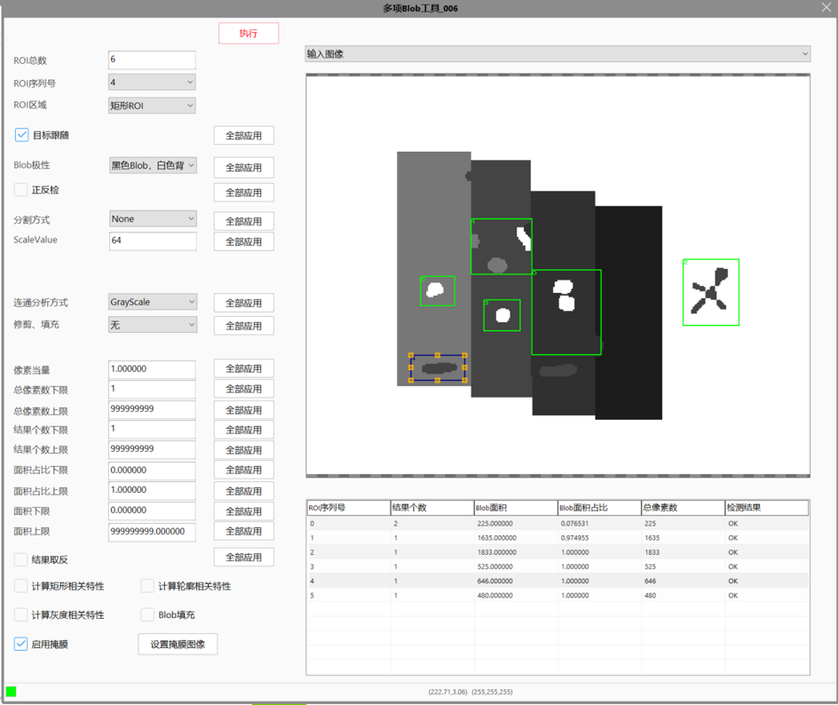
Blob工具可以提取图像的闭合特征轮廓。通过参数设置，过滤，提取符合条件的闭合区域。当需要提取多处区域时，Blob工具无法满足需求，需要支持多个区域Blob计算的多项Blob工具。
Blob工具通过参数设置来获取目标的几何特征轮廓，几何特征可以精确、快速的进行旋转、缩放等变换，且对图像灰度线性、灰度非线性变化具有良好的适应性。
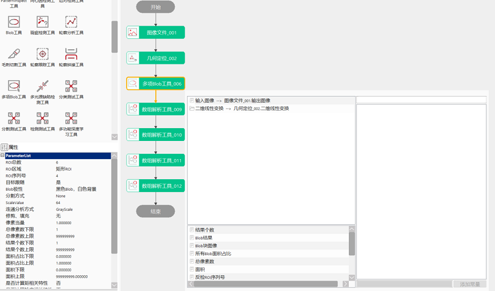
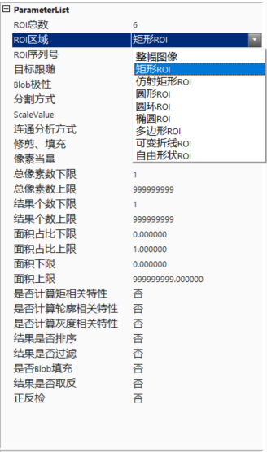
ROI总数
设置多项Blob工具的ROI数量，取值范围是1~50，当ROI类型为整幅图像时，ROI总数固定为1。
ROI序列号
对指定序列号的ROI进行参数设置。
ROI区域
Blob计算ROI区域类型设置，可选整幅图像、矩形ROI、仿射矩形ROI、圆形ROI、圆环ROI、椭圆ROI、多边形ROI、可变拆线ROI和自由形状共9种。
目标跟随
目标跟随属性是用来设置多项Blob工具ROI区域是否跟随二维线性变换。全部应用按钮可以将设置值同步到所有ROI，其他参数功能相同。
是：Blob工具可以链接二维线性变换，ROI区域会跟随二维线性变换移动，例如几何定位工具输出的二维线性变换。
否：Blob工具不可以链接二维线性变换，ROI区域可以动态实时指定，即设置的ROI区域坐标为多少，ROI区域的位置就在什么位置。
Blob极性
黑色Blob，白色背景：检测白色背景下的黑色区域。
白色Blob，黑色背景：检测黑色背景下的白色区域。
正反检
当勾选正反检时，同时检测黑色和白色区域，勾选正反检的区域会输出正检和反检两组数据结果。
分割方式
None（直接输入）：对已分割的图像，通过提供尺度因数Scale归一化像素权重，以便于后续的特征量计算。
Hard Threshold（硬阈值分割）：硬阈值分割原理较为简单，即将灰度级小于分割阈值的像素认为是目标，而将灰度级大于等于分割阈值的像素认为是背景，反之亦然。图2为硬阈值分割示例，其中将分割阈值设定为100，即将灰度级小于100的像素标记为目标，而将灰度级大于等于150的像素标记为背景
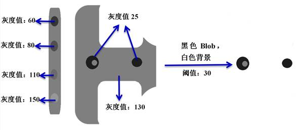
Soft Threshold（软阈值分割）：为了消除或减轻由硬阈值分割造成的空间量化误差，可以使用软阈值分割。通过软阈值分割，可将灰度图像转换为权重图像。和硬阈值不同，软阈值实际上是一个阈值序列，灰度值比阈值序列大的像素权重为1.0（目标），灰度值比阈值序列小的像素权重为0.0（背景），在阈值序列中间的像素权重为0.0到1.0之间的数值。
在软阈值分割中，涉及到4个参数：高阈值High Threshold，低阈值Low Threshold，柔化因数Softness（阈值序列中的过渡层级），其值域范围为[0, 254]，极性。图3为软阈值参数示意图。
连通分析方式
Whole Image：分割后图像中的所有目标像素被标记为一个单一的Blob。即使图像中存在多个不连通的目标区域，Whole Image连通性分析也将其视为单一的Blob，所有的特征量都根据图像中全部目标像素计算得到。
Gray Scale：将分割后的图像中的目标像素标记为若干个连通的区域。目标区域是8连通的。
Labeled：在图像处理应用中，有时需要将图像内容分割为若干个集合，而不是简单的目标和背景。例如，将图像分割为四类不同的像素，每一类像素代表不同的灰度范围，利用唯一的label值表示。Labeled连通性分析根据连通性将label值相同的连通像素聚合为一个连通区域。在Labeled连通性分析中没有目标区域和背景区域的概念，所有区域都是6连通的。
特征量
在Blob分析中，从计算的角度可将特征量分为四类，包括基本特征量、矩阵相关特征量、轮廓相关特征量和灰度相关特征量。Blob及其特征示意图如图4所示。
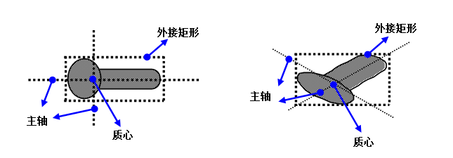
基本特征量
特征量 1：连通标记ConnectivityLabel。连通标记，即区域的类别标记。对灰度图像，Blob标记为1，Hole标记为0。对标记图像，即为Blob的标记。连通标记可在连通分量标记完毕后进行设置。
特征量 2：面积Area。即Blob中所有非零像素的权重之和。
特征量 3：质心CenterMassX，CenterMassY。质心是Blob的平衡点。Blob的质心不一定在Blob内。如图5所示。
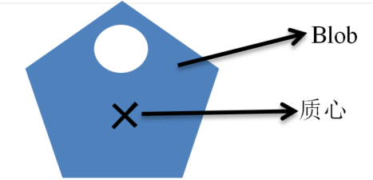
特征量 4：坐标最小外接矩形。如图6所示，其可用区域由x最小坐标、x最大坐标、y最小坐标、y最大坐标进行完全描述。
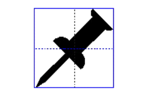
特征量 5：主轴最小外接矩形。如图7所示，其中原图像坐标系原点平移到区域质心，并顺时针旋转 为区域长轴角度。
为区域长轴角度。
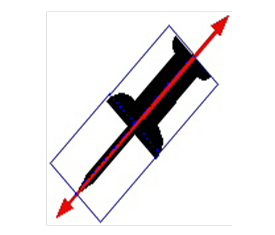
特征量 6：子节点个数NumChildren。裁剪或填充操作前的子节点个数。
特征量 7：最小外接矩形对角线长度。
特征量 8：质心到最小外接矩形的中心偏移。
矩相关特征量
特征量 9：关于坐标轴的惯性二阶矩，即关于过质心并与坐标轴平行的轴的惯性二阶矩，如图8所示。

特征量 10 ：方向Angle。即对应惯性二阶矩最小的轴。如图9所示。
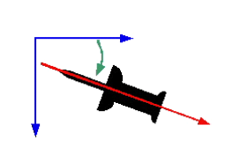
特征量 11：关于主轴的惯性二阶矩。即最小惯性二阶矩和最大惯性二阶矩。
特征量 12：延长度Elongation。最大惯性二阶矩与最小惯性二阶矩的比值。圆的延长度为1，其为延长度的下限。
特征量 13：稠密度Density。描述Blob内部点分布的紧凑程度，其定义为总面积/主轴最小外接矩形面积。取值范围为(0,1]。
特征量 14：划伤度Scratchness。指主轴最小外接矩形宽度平方与面积的比值，反映了属于划伤的可能性，取值范围为(0,+∞)，该值越大，则越可能是划伤。
特征量 15：离心率Eccentricity。指物体圆形度。如果离心率越大，物体越扁平；反之越接近圆形。
轮廓相关特征量
特征量 16：边界像素长度BoundaryPixelLength。如图10所示，若区域的轮廓边界点序列为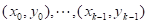，其中序列中的前后两个像素是连通的，包括第一个像素和最后一个像素在内，像素边界长度定义为
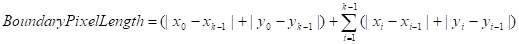
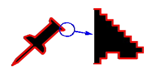
特征量 17：周长Perimeter。
特征量 18 ：圆度Acircularity。
特征量 19：归一化圆度AcircularityRms。
灰度相关特征量
特征量 20：最小灰度。指Blob内部所有点的最小灰度值。
特征量 21：最大灰度。指Blob内部所有点的最大灰度值。
特征量 22：平均灰度。指Blob内部所有点的平均灰度值。
特征量 23：基于事件的平均灰度的最大值。这里基于事件应该理解为基于游程。所以基于事件的平均灰度的最大值即基于游程的平均灰度的最大值。也就是Blob内部所有的游程平均灰度的最大值。
特征量 24：基于事件的平均灰度的最小值。这里基于事件应该理解为基于游程。所以基于事件的平均灰度的最小值即基于游程的平均灰度的最小值。也就是Blob内部所有的游程平均灰度的最小值。
其他参数
见参数说明。
当所有区域的执行结果都为true时，工具执行结果为true，否则工具执行结果为false。
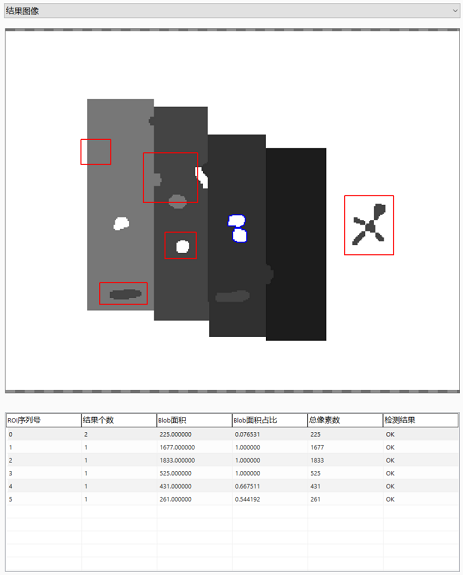
| 注释事项 |
|---|
| 1. 多项Blob工具常与几何定位工具搭配使用，几何定位工具通过几何特征定位到特定区域后，Blob工具在该区域的指定位置进行检测分析，提高检测的准确性和效率。 |
| 2. 多项Blob工具在使用时应该注意ROI区域的摆放位置，如果ROI区域超出图像范围，会导致Blob分析失败。 |
| 3. 多项Blob工具的执行结果为各个ROI结果取并，当工具执行结果为false时，执行为false的ROI将在视图上显示为红色。生产界面上双击红色ROI可弹出高级属性界面并直接调试对应参数。 |
| 参数名称 | 参数说明 |
|---|---|
| 目标跟随 | 是：可以连接二维线性变换；否：按照链接进的ROI区域执行工具 |
| ROI区域 | 工具执行检测的区域，分为9种：整幅图像、矩形ROI、仿射矩形ROI、圆形ROI、圆环ROI、椭圆ROI、多边形ROI、可变拆线ROI和自由形状 ROI（边可以变成曲线的多边形）。 |
| Blob极性 | Blob极性是指目标和背景的黑白过度情况，分为2种：黑色Blob-白色背景和白色Blob-黑色背景。 |
| 分割方式 | Blob分析之前，必须将图像分割为目标和背景，Blob工具提供的分割方式分为3种：None（直接输入）、Hard Threshold（硬阈值分割）和Soft Threshold（软阈值分割）。 |
| Threshold | Threshold硬阈数值。 |
| 连通分析方式 | 图像被分割为目标和背景之后，连通性分析根据目标像素的连通属性将其聚合成连通的区域。Blob工具提供的连通性分析方式分为3种：Whole Image、Gray Scale和Labeled。 |
| 修剪、填充 | 连通性分析方式选择为Gray Scale和Labeled时显示该参数，分为3种：无、修剪和填充，该参数将根据指定的最小面积，将面积小于最小面积的Blob结果直接修剪掉或者填充到相邻的大Blob中。 |
| 像素当量 | 面积=像素总数*像素当量² |
| 总像素数上限 | 所有检测到的Blob所占有像素个数的最大值，不能小于下限值，取值范围[0, 999999999]。当输出结果中检测到的Blob总像素数在上下限之间时，检测区域执行结果为true，否则为false。 |
| 总像素数下限 | 所有检测到的Blob所占有像素个数的最小值，不能大于上限值，取值范围[0, 999999999]。当输出结果中检测到的Blob总像素数在上下限之间时，检测区域执行结果为true，否则为false。 |
| 结果个数上限 | 所有检测到的Blob所占个数的最大值，不能小于下限值，取值范围[0, 999999999]。当输出结果中检测到的Blob总个数在上下限之间时，检测区域执行结果为true，否则为false。 |
| 结果个数下限 | 所有检测到的Blob所占个数的最小值，不能大于上限值，取值范围[0, 999999999]。当输出结果中检测到的Blob总个数在上下限之间时，检测区域执行结果为true，否则为false。 |
| 面积占比下限 | 所有Blob面积与ROI检测区域面积之比的最小值，不能大于上限值，取值范围[0.0, 1.0]。当所有Blob面积与ROI检测区域面积之比在上下限之间时，检测区域执行结果为true，否则为false。 |
| 面积占比上限 | 所有Blob面积与ROI检测区域面积之比的最大值，不能小于下限值，取值范围[0.0, 1.0]。当所有Blob面积与ROI检测区域面积之比在上下限之间时，检测区域执行结果为true，否则为false。 |
| 面积下限 | Blob面积最小值，不能大于上限值，取值范围[0, 999999999]。当所有Blob面积在上下限之间时，检测区域执行结果为true，否则为false。 |
| 面积上限 | Blob面积最大值，不能小于下限值，取值范围[0, 999999999]。当所有Blob面积在上下限之间时，检测区域执行结果为true，否则为false。 |
| 是否计算矩相关特性 | 选择“是”，则计算矩相关特征量，并将结果显示到监视窗口Blob结果参数中，同时矩相关特征量将参与结果过滤设置。 |
| 是否计算轮廓相关特性 | 选择“是”，则计算轮廓相关特征量，并将结果显示到监视窗口Blob结果参数中，同时轮廓相关特征量将参与结果过滤设置。 |
| 是否计算灰度相关特性 | 选择“是”，则计算灰度相关特征量，并将结果显示到监视窗口Blob结果参数中，同时灰度相关特征量将参与结果过滤设置。 |
| 结果是否排序 | 选择“是”，则显示结果排序方式和结果排序参数这两个参数，并根据选择的排序方式和排序参数对结果进行排序。 |
| 结果是否过滤 | 选择“是”，则对相应的参数进行过滤设置，并按照设置对检测结果进行筛选。 |
| 过滤不完整Blob | 被检测区域ROI截断的blob即为不完整blob |
| 结果是否取反 | 选择“是”，则将工具的执行结果取反，例如结果为false，选择取反后，结果变为true，反之亦然。 |
| 是否Blob填充 | 选择“是”，则在黑色背景上根据检测到的目标位置、形状、大小、方向等信息进行白色填充。 |
| 正反检 | 可同时检测黑色blob与白色blob |
| 输入图像 | 显示待检测的图像。 |
| 数据链 | 输入图像 |
| 二维线性变换 | 目标相对于模板的平移、旋转、缩放变换。 |
| 参数名称 | 参数说明 |
|---|---|
| 输入图像 | 输出图像的宽度、高度、像素大小，同监视窗口的输入图像参数。 |
| 结果个数 | 输出各个ROI的Blob结果个数，供后序工具使用，同监视窗口的结果个数参数。 |
| Blob结果 | 输出各个ROI的结果信息，包括基本特征量、矩相关特征量、轮廓相关特征量和灰度相关特征量等参数，供后序工具使用，同监视窗口的Blob结果参数。 |
| 所有Blob面积占比 | 输出各个ROI的Blob面积与ROI检测区域面积之比，供后序工具使用，同监视窗口的所有Blob面积占比参数。 |
| 总像素数 | 输出各个ROI的Blob占有的像素个数。 |
| 面积 | 输出各个ROI的面积，面积=总像素数*像素当量²。 |
| 反检ROI序列号 | 进行反检的ROI序号集合 |
| 反检结果个数 | 进行反检的每个ROI的检测结果数量 |
| 反检所有Blob面积占比 | 进行反检的每个ROI的检测结果所有Blob面积占比 |
| 反检总像素数 | 进行反检的每个ROI的检测结果总像素数 |
| 所有ROI检测结果 | 正反检总的检测结果 |
| 执行结果 | 工具执行结果，执行成功显示“OK”，执行失败显示“NG”，同监视窗口的执行结果参数。 |
| 执行时间 | 工具执行时间。 |
参见“\Samples\多项Blob工具.gvp”。